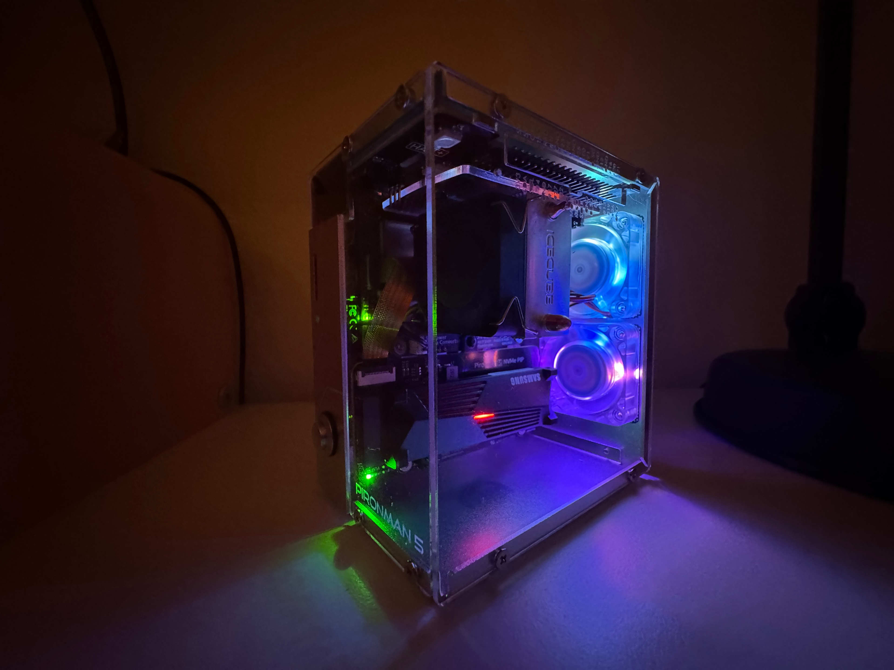

The stores can keep their $5 cookie along with their $5 shakes. Enjoy this Valentine's Day sugar cookie any time of year - the secret ingredient is butter!
Start by preheating the oven to 350 degrees While the oven is preheating begin the cookie dough by creaming together the butter and sugar until light and fluffy. Scrape the sides of the bowl and add the eggs, vanilla extract and almond extract and beat again until it is mixed well. Scrape the sides again and add the flour and baking powder. Mix again until thoroughly combined. Scoop out 1/4 cup of dough and roll it into a ball. Again, you can make the cookies smaller if you want to but you will want to adjust the baking time. Once all your dough is rolled into balls, gently press the balls down with a glass or measuring cup. This will give the cookies their signature look.
The cookies will spread as they bake, so make sure to leave room in between the cookies on the pan. I usually only put 6 cookies per pan. Bake at 350 degrees for 9-11 minutes. It is so important to not over bake these cookies! Over baking will cause your cookies to dry out, and we want a soft and chewy texture. The cookies shouldnt brown at all. You will know they are ready when they are puffed up and no longer look wet in the middle. For the large cookies I wouldn’t let them bake longer than 12 minutes.
| Ingredient | Amount |
|---|---|
| salted butter | 1 cup |
| granulated sugar | 1 cup |
| eggs | 2 |
| vanilla extract | 1 tsp |
| almond extract | 1/2 tsp |
| all purpose flour | 3 cups |
| baking powder | 2 tsp |
Once they are removed from the oven, allow them to cook on the cookie sheet. While the cookies are cooling, make the frosting by creaming the butter until nice and smooth. Slowly add the powdered sugar, almond extract and milk until smooth and creamy. Then add 4 drops of the neon pink food coloring if desired. You want to cookies to be mostly cooled, but just the slightest bit warm still when you ice them. This will cause the icing to melt just a little bit and will give your cookies a nice smooth look.
Crumbl sugar cookies are served chilled, so if you can bring yourself to wait, chill them in the fridge until you are ready to serve. There you have it. Crumbl sugar cookies from your kitchen, and at a fraction of the price!
| Ingredient | Amount |
|---|---|
| salted butter (softened) | 1/2 cup |
| powdered sugar | 3 cup |
| almond extract | 1 tsp |
| milk | 1-3 Tbs |
| neon pink food coloring (optional) | 4 drops |